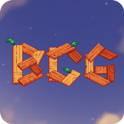
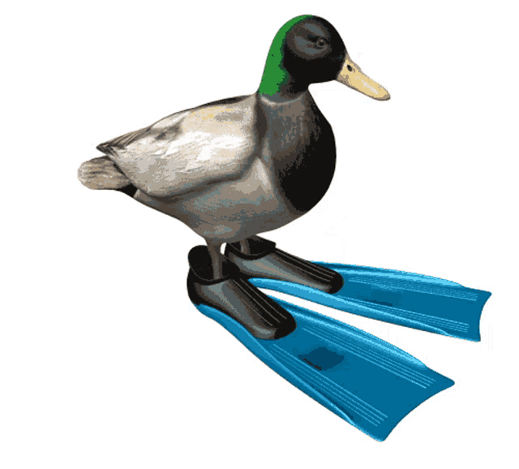

- 1

Decompilation of a minecraft modpack called: BigChadGuys+ (Non Cobblemon!) by jflec (with some additional mods) for fabric 1.20.1
- 2

What project am I currently doing?
- 3
A (soft) decompilation of the game: Mihoshiho - It Will Be Okay! on itch.io, because the last part of the game is almost impossible to pass thourgh
- 4
An run-in-your-browser-tab app that streaming some video on a disk and serving some image on... a disk... as well